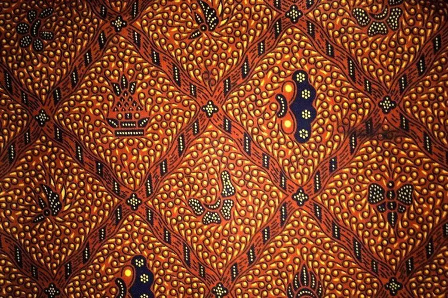
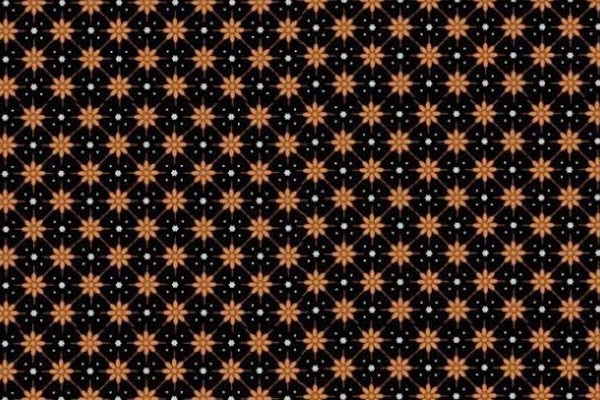
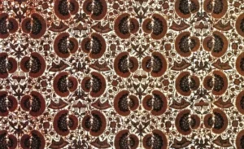
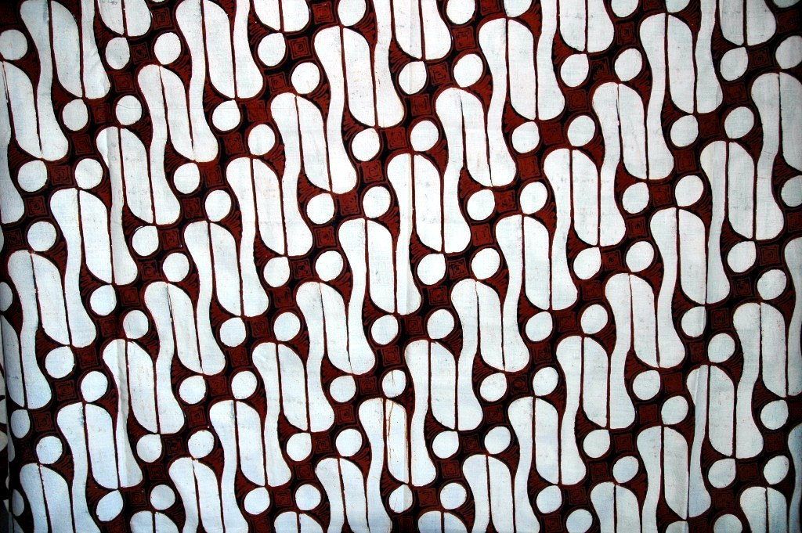
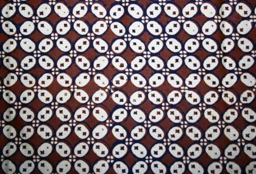

Ahmad Roisul Ahsan, 2 Oktober 2024
Batik Khas Surakarta
Pengantar
Surakarta merupakan kota yang terkenal akan budayanya hingga memiliki slogan Spirit of Java dikarenakan Surakarta merupakan pusat perkembangan budaya Jawa. Salah satu karya budaya yang terkenal dari Surakarta adalah batiknya. Batik dari Solo dikenal dengan nama batik keraton. Namun batik keraton dari Yogyakarta dan Surakarta itu sangat berbeda.
Motif batik Solo seringkali memiliki ciri khas pola tradisional pada batik cap dan tulisnya. polanya sebagian besar berwarna coklat, yang juga sedikit kuning dan ukuran pola geometris kecil.
Ciri - Ciri Batik Khas Solo
Ciri - ciri atau khas batik Solo diantaranya:
- Corak dan pola tradisional dalam pengerjaannya, yaitu batik cap dan batik tulis.
- Bahan dasar yang digunakan dalam proses pewarnaan masih menggunakan bahan-bahan dalam negeri.
- Batik ini memiliki kecenderungan warna coklat soga lebih kekuning-kuningan
- Batik ini dikenal luas karena ukuran polanya yang kecil.
- Memiliki fitur geometris.
5 Ragam Motif Batik Solo
Berikut beberapa contoh ragam motif batik Solo yang populer:
Sidomukti

Batik Sidomukti adalah motif batik yang berasal dari daerah Solo, Jawa Tengah, dengan pola yang melambangkan harapan akan kehidupan yang sejahtera dan bahagia. Kata "sido" berarti terus-menerus atau berkesinambungan, sementara "mukti" berarti mulia atau makmur. Motif ini sering digunakan dalam upacara pernikahan tradisional Jawa karena simbolismenya yang mewakili kebahagiaan dan kesejahteraan dalam kehidupan berkeluarga.
Truntum

Batik Truntum memiliki pola yang menggambarkan bintang-bintang kecil di langit malam. Motif ini diciptakan oleh permaisuri Raja Pakubuwono III, yang berharap cinta dalam keluarganya kembali bersinar seperti bintang-bintang di langit. Truntum sering digunakan oleh orang tua pengantin pada acara pernikahan sebagai simbol cinta yang tulus dan abadi yang dituntun oleh kasih sayang.
Sawat

Batik Sawat adalah motif yang terinspirasi oleh sayap burung garuda, lambang kekuatan dan kekuasaan dalam mitologi Jawa. Garuda, sebagai kendaraan Dewa Wisnu, dalam motif ini melambangkan perlindungan dan kekuasaan raja. Motif ini sering dipakai oleh kalangan bangsawan atau keraton dalam acara-acara resmi sebagai lambang kehormatan dan kewibawaan.
Parang

Batik Parang adalah salah satu motif batik tertua dan paling ikonik, sering diasosiasikan dengan kekuatan dan keberanian. Pola garis diagonalnya menyerupai gelombang laut yang tak pernah berhenti bergerak, menggambarkan keteguhan dan perjuangan yang terus-menerus. Batik Parang dulu hanya dipakai oleh keluarga kerajaan sebagai simbol kebesaran dan martabat.
Kawung

Batik Kawung adalah motif geometris yang menyerupai buah kawung (sejenis buah aren) atau bunga teratai, yang melambangkan kesucian, kebijaksanaan, dan kekuasaan. Pola ini biasanya berbentuk lingkaran-lingkaran yang tersusun rapi, menunjukkan keseimbangan dan harmoni. Dahulu, batik ini juga sering dikenakan oleh raja dan keluarganya sebagai simbol keadilan dan kebijaksanaan.